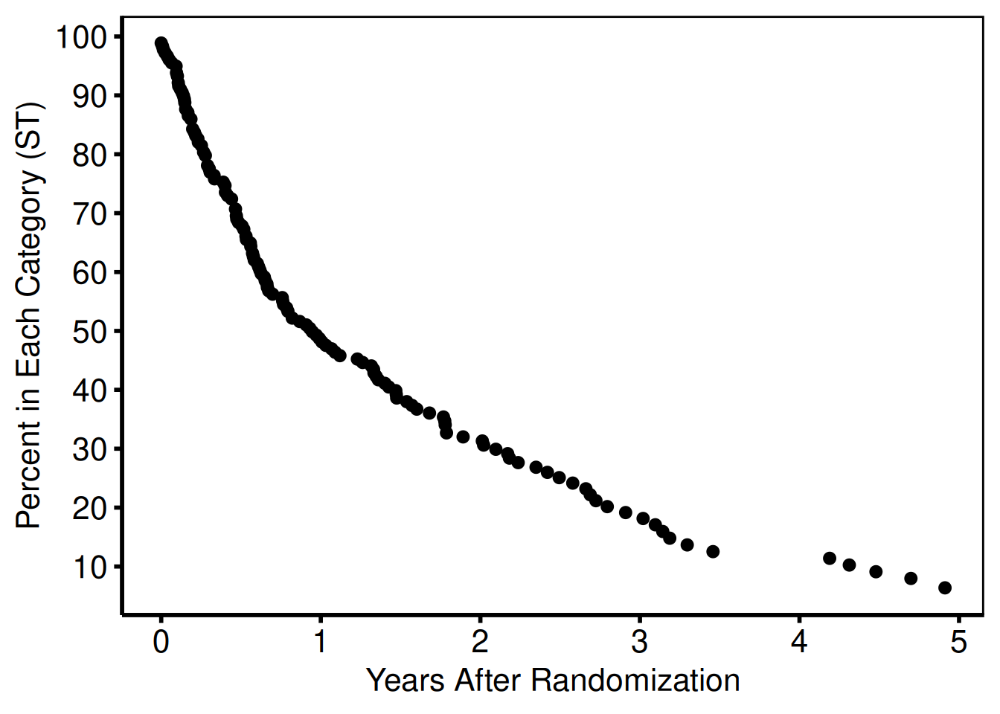
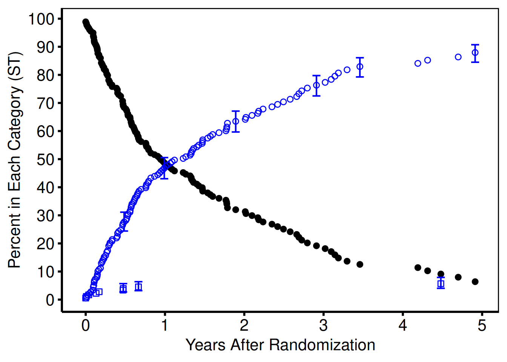
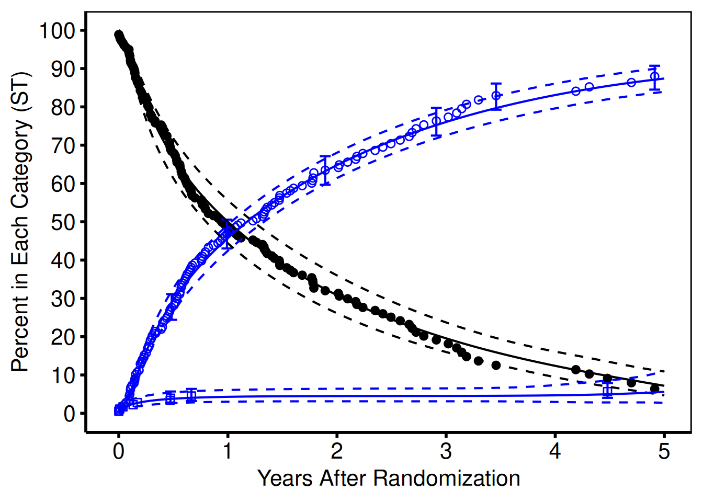
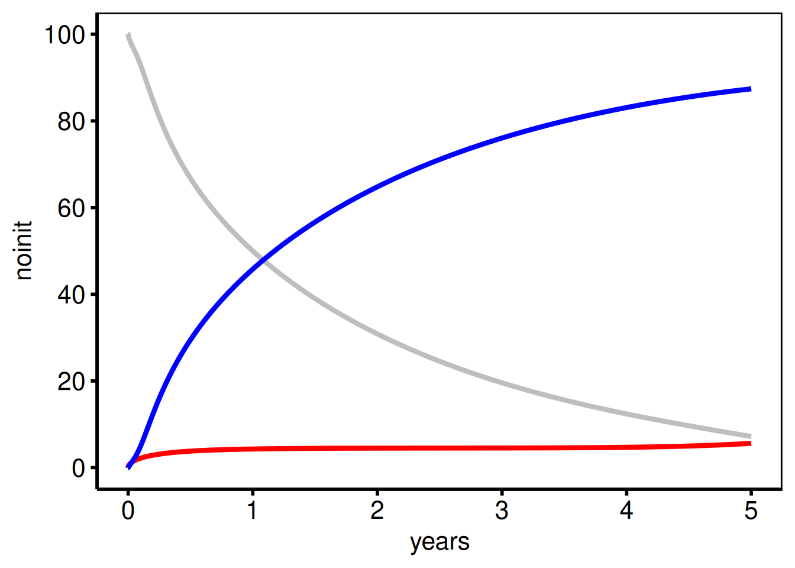
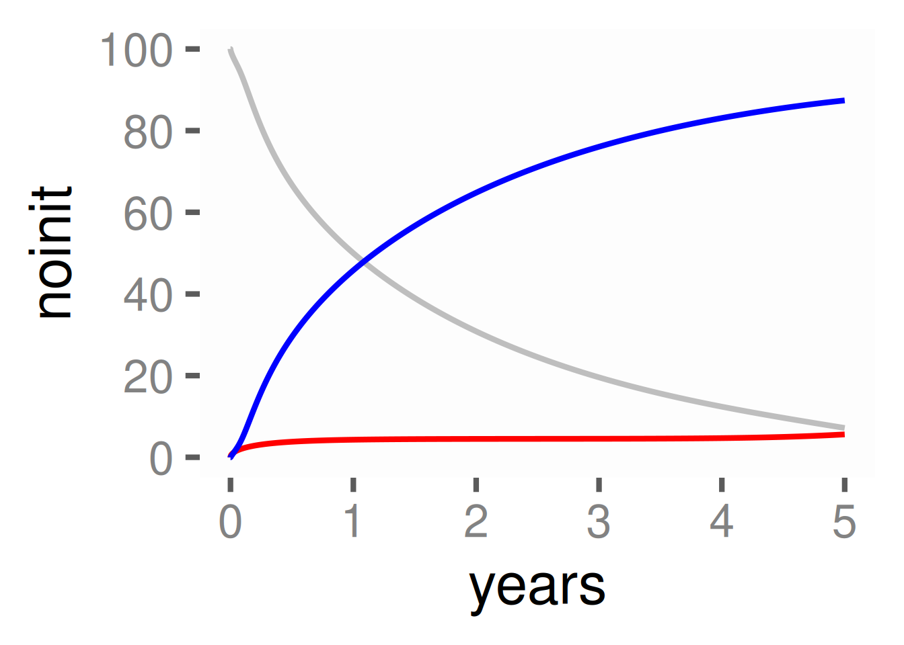

# load required libraries
library("ggplot2") # Plotting environment
library("hvtiPlotR") # CCF HVI plotting functionality
# Load the example datasets
data(parametric, package = "hvtiPlotR")
data(nonparametric, package = "hvtiPlotR")
# Set a default hvtiPlotR plotting theme
theme_set(hvtiPlotR::hvti_theme("manuscript")) Abstract
We introduce the R package hvtiPlotR, tools for creating publication quality graphics in R for the Heart & Vascular Institute Clinical Investigations statistics group at the Cleveland Clinic. The hvtiPlotR package contains a tutorial for generating figures (this vignette) and small set of functions for formatting and saving those figures. These tools describe how to generate figures in R to replace the plot.sas macro we currently use in SAS.
This package vignette is a tutorial for generating our standard figures using the ggplot2 package commands in R. The tutorial presents a series of R recipes for generating figures. The hvtiPlotR package includes a set of themes designed to format those figures for inclusion in manuscript and PowerPoint targets.
This document is included with the hvtiPlotR package as a package vignette. The vignette is installed into R when the hvtiPlotR package is installed, and viewable using the command: vignette("hvtiPlotR", package="hvtiPlotR").
The goal of the vignette is as a tutorial to document the best practices of creating our publication quality graphics for both manuscripts and power point presentations. It is our intent to update this vignette as our standards and the hvtiPlotR package are modified.
Keywords: publication graphics, powerpoint, ggplot2, plot.sas.
About this document
This package vignette is an introduction to the R package hvtiPlotR, and a tutorial for creating publication quality graphics in R. The package and this document describe the process of creating graphics in R that conform to the standards of the clinical investigations statistics group within The Heart & Vascular Institute at the Cleveland Clinic. These graphics are analogous to those generated with the plot.sas macro in SAS.
The document is a package vignette for the hvtiPlotR package, and is the primary documentation for the package. The latest version of the document can be obtained with the following command:
vignette("hvtiPlotR", package = "hvtiPlotR")
The goal is to update this vignette as the package, and our graphing standards, are updated. A development version of the hvtiPlotR package is also available on Github (https://github.com/ehrlinger/hvtiPlotR)
The package can be installed using remotes::install_github("ehrlinger/hvtiPlotR")
We invite comments, feature requests and bug reports for this package at https://github.com/ehrlinger/hvtiPlotR/issues
 Figure 1: Demonstration figure
Figure 1: Demonstration figure
Introduction
For many years, the mainstay for generating graphics for manuscripts and presentations in the statistics group in The Heart & Vascular Institute has been the plot.sas macro using SAS. However, recently, we have had issues migrating this macro to newer versions of SAS (> 8.0) and Microsoft Office products (> 2003).
In an effort to alleviate these version issues, and to standardize the generation of figures within R, we have developed the hvtiPlotR R package. The goal of the package, and this vignette, is simplify the creation of publication quality graphics in R. We are specifically encoding the best practices of the HVTI Clinical Outcomes Research and Registries (CORR) formatting, so that our statisticians will be able to create graphics for publications and presentations with a minimal amount of effort.
The hvtiPlotR package implements best practices for R graphics by leveraging the ggplot2 package (Wickham 2009). The ggplot2 package is an implementation of the Grammar of Graphics (Wilkinson 2005), which is a formalization of graphical concepts, and the building of graphical objects from a sequence of independent components. These components can be combined in many different ways.
The plot.sas macro is also an implementation of a graphics grammar. The grammar plot.sas is derived from the ZETA pen plotters, which used GML (Graphics Machine Language) to control between 4 and and 8 colored pens for generating color line and point figures.
%let STUDY=/studies/cardiac/valves/aortic/replacement/partner_publication_office/partner1b/mortality_5y
*****************************************************************************;
* Bring in PostScript plot macro ;
filename plt "! MACROS /plot.sas "; %inc plt;
filename gsasfile pipe 'lp ';
*____________________________________________________________________________;
* ;
* P O S T S C R I P T P L O T S
*____________________________________________________________________________;
* Multiple decrement , nonparametric and parametric ;
filename gsasfile "&STUDY / graphs /ce. states .ST.ps";
*____________________________________________________________________________;
* Create the figure here ! ;
*____________________________________________________________________________;
%plot( goptions gsfmode =replace , device =pscolor , gaccess = gsasfile end;
id l="&STUDY / graphs /ce. states .ST.sas percent ", end;
labelx l=" Years After Randomization ", end;
axisx order =(0 to 5 by 1), minor=none , end;
labely l=" Percent in Each Category (ST)", end;
axisy order =(0 to 100 by 10) , minor=none , end;Listing 1: plot.sas commands: Figure setup.
Because both systems use a graphics language it is a straight forward exercise to translate commands between the two systems.
This document outlines how to generate figures using the ggplot2 package in R. Our approach is to demonstrate the R commands to generate the same elements created with plot.sas commands. Section 2 gives an overview of the methodology of the plot.sas macro and
Section 3 details how to create line and point plots with similar ggplot2 commands. The hvtiPlotR package contains custom themes for figures. Once a figure has been created using ggplot2 commands, Section 4 details how to use the themes contained in the hvtiPlotR package to get the formatting correct for manuscripts or presentations. Section 5 describes how to save these figures to simplify the import into publication documents.
The plot.sas macro
We first look at some example code using the plot.sas macro. This code is intended to generate a figure for manuscript publication and was modified to generate Figure 1. We will walk through this example code in this section to help us understand the steps for generating these figures in R.
Note the first line of the code block in Listing 1 indicates the path to the specific example file location. The filename statements bring in the plot.sas macro, indicate how to print, and where to save the graphics file. The plot.sas macro call starts with the %plot command.
The goptions statement in the first line sets global graphic values, including the filename (gaccess=) where the figure will be saved (see Section 5). Each plot.sas command is terminated with the end; statement. We’ll look at each of the remaining command type individually.
******NON - PARAMETRIC : SYMBOLS AND CONFIDENCE BARS *******
tuple set=green , symbol =dot , symbsize =1/2, linepe =0, linecl =0,
ebarsize =3/4, ebar =1, x=iv_state , y=sginit , cll=stlinit ,
clu=stuinit , color=black ,
end;
tuple set=green , symbol =circle , symbsize =1/2, linepe =0, linecl =0,
ebarsize =3/4, ebar =1, x=iv \_state , y=sgdead1 , cll=stldead1 ,
clu=studead1 , color=blue , end; tuple set=green , symbol =square ,
symbsize =1/2, linepe =0, linecl =0, ebarsize =3/4, ebar =1,
x=iv_state , y=sgstrk1 , cll=stlstrk1 , clu=stustrk1 , color=blue ,
end; Listing 2: plot.sas commands: points and errorbar tuple statements.
/********** PARAMETRIC : SOLID LINES AND CONFIDENCE INTERVALS **********
tuple set=all , x=years , y=noinit , cll=clinit , clu=cuinit , width =0.5 ,
color=black , end; tuple set=all , x=years , y=nodeath , cll=cldeath ,
clu=cudeath , width =0.5 , color=blue , end; tuple set=all , x=years ,
y=nostrk , cll=clstrk , clu=custrk , linecl =2, width =0.5 , color=blue ,
end;Listing 3: plot.sas commands: lines tuple statements.
The id l= command sets the footnote text used for manuscript figures to identify where the figure is saved (see Section 5). The labelx and labely commands set the axis label text (Section 3.3) and the axisx and axisy set the scales for each axis locating text and tics (Section 3.4).
The plot.sas continues in Listing 2. Here, the tuple command builds up graphics objects within the figure plot window. This first set of tuple commands constructs a set of three elements containing both points (Section 3.5) and errorbars (Section 3.6). Each tuple statement operates on the dataset indicated by the set command. Symbols shapes and sizes are specified with the symbol and symbsize commands (Section 3.9).
The second set of tuple statements in Listing 3 construct a set of three elements containing lines and confidence intervals (Section 3.7).
The plot.sas1 macro code is closed by the ending ); characters, and SAS is instructed to run; the code. Running combines building the figure by combining elements from label, axis and tuple statements and saving it into the file specified by the gsasfile variable. The resulting figure is shown in Figure 2.
Figure 2: Manuscript figure (SAS version)
Note that much of the figure formatting is mixed within the tuple statements using width, color, linepe and linecl commands. In the plot.sas macro, omitting these commands will generate a figure with the default values specified within the plot.sas macro or device theme (Section 4).
A similar set of plot.sas commands (Listing 4) is used to create presentation graphics. Differences between manuscript and presentation graphics include the target device and ftext as well as some handling of figure labels with value instead of label commands. The output from this code is shown in Figure 3.
In addition to the plot.sas commands, we also have a set of graphics standards (graphics rules) for what to and not to include in presentation graphics, we will describe these rules in (Section 6). Many of these are incorporated into the plot.sas macro to protect the user from violating these standards.
Generating ggplot2 graphics
In order to create figures similar to using plot.sas macro, using R, we will make extensive use of the ggplot2 package. This will require translating from the graphics language of plot.sas to the graphics language of ggplot2.
For the remainder of this document, R code will be highlighted in grey boxes, as shown below. We will refer to these blocks as code chunks. You can run each code chunk individually, using copy/paste into an interactive R session, or within a stand alone R script. This tutorial requires the hvtiPlotR package to load the data and themes we will be discussing.
*_____________________________________________________________________;
* C G M F I L E S F O R P O W E R P O I N T S L I D E S *_____________________________________________________________________
* Competing risks , parametric only ;
filename gsasfile "&STUDY/graphs/ce.states.ST.cgm ";
%plot(goptions gsfmode =replace , device =cgmmppa , ftext=hwcgm001 , end;
axisx order =(0 to 5 by 1), minor=none , value =( height =2.4) , end;
axisy order =(0 to 100 by 20) , minor=none , value =( height =2.4) ,
value =( height =2.4 j=r ' ' '20 ' '40' '60 ' '80 ' '100 '), end;
tuple set=all , x=years , y=noinit , width =3, color=gray , end;
tuple set=all , x=years , y=nostrk , width =3, color=red , end;
tuple set=all , x=years , y=nodeath , width =3, color=blue , end;
);
run;Listing 4: plot.sas commands: PowerPoint graphics using CGM instructions.
 Figure 3: PowerPoint figure (SAS version)
Figure 3: PowerPoint figure (SAS version)
You can install the package with the following commands:
# Install the latest **hvtiPlotR** package.
#
#
# The devtools package is installed on all our
# jjnb-gen servers as well as other R instances.
# For working on your own install, first use the install command
# install.packages("devtools")
# Load the package
library("devtools")
# To get the latest version of hvtiPlotR.
install_github("ehrlinger/hvtiPlotR")Importing the data
For most of this document, we assume that the data analysis has been completed in SAS. In this case, the first step in creating figures in R is to get the data out of SAS. There are many ways to do this, but we have had success using the tp.bd.SAStoR.sas program (under the datasets folder) to export a data set into a SAS xport file.
Once an xport file has been created, we read it into R with the foreign package. This recipe reads an xport into a data.frame and then re-reads the xport file to pull out the SAS labels to describe the variables. The labels will be stored in a vector, which we can index by the variable names.
library("foreign")
# The xport file name
dtFilename = "../datasets/par_cst.xpt"
# Read the xport file into a data.frame
dta<- read.xport(dtFilename)
# Reading in the labels takes 2 more commands.
dta.info <- lookup.xport(dtFilename)
dta.labels <- dta.info[[1]]$label
## Fill in empty labels with the variable name
dta.labels<-sapply(1:length(dta.labels), function(ind){
if(dta.labels[ind] == "")
colnames(dta)[ind]
else
dta.labels[ind]
})
## For indexing the labels,
names(dta.labels) = colnames(dta)Initialize the figure
Referring back to the SAS code chunks in Section 2, Listing 1 sets the current working directory, and does some house keeping, including loading the plot.sas macro. Similarly, to get started in R, we first load the required libraries: ggplot2 for graphics, and hvtiPlotR for themes. The following code chunk also sets the initial default theme to a generic black and white format, and brings in a pair of example datasets.
One advantage of ggplot2 is that figures can be built up in successive statements. This tutorial will make extensive use of this to demonstrate the process. Starting in this code chunk, we will save the intermediate objects in the ccf_plot variable. Here we simply create an empty ggplot2 figure that we will be adding to as we work through the commands in the plot.sas macro. Note that we include the %plot() commands in the comments above the equivalent ggplot2 command for comparison.
## To reproduce the plot.sas function, line by line.
###-------------
## There are SAS options we will not use here.
#
# %plot(goptions gsfmode=replace, device=pscolor, gaccess=gsasfile end;
ccf_plot <- ggplot()In R, we set the equivalent variables gsmode, device and gaccess when saving the figure (Section 5).
Labels
The next section of Listing 1 in Section 2 sets the x and y axis titles, as well as the location of the major axis tick marks. We will split this up in our R code. The ggplot2 package uses the labs function to set the axis labels.
###-------------
## Labels are a single command, scales control the axis
#
# labelx l="Years After Randomization", end;
# labely l="Percent in Each Category (ST)", end;
ccf_plot <- ccf_plot +
labs(x = "Years After Randomization", y = "Percent in Each Category (ST)")The labs function can also be used to set the plot title and legend titles. We will not cover that functionality here, details are available in Wickham (2009) or through the Internet.
Scales
Axis ticks are controlled with the scale_ functions. ggplot2 has many different scale_ functions. These functions will work on one axis at a time, so for a typical continuous axis, we use the scale_x_continuous or scale_y_continuous functions. Major axis are controlled using the breaks argument. Listing 1 uses a sequence of numbers to set the location of major tick marks (seq(0,5,1)). One mark for every year starting at 0, and ending at 5. Minor tick marks are automatically generated, but can also be specified using a minor_breaks= argument. You could also specify the breaks using a vector of values (c(0,1,2,3,4,5)), as well as relabel the ticks manually using a labels= argument.
Note that the scale_ functions do not restrict the figure viewport at all. They are simply used to setup and label the axis tick marks. You can specify that the y-axis ticks are only from 0 to 50, and the figure would have a blank axis from 50 to the limits of the data. We discuss controlling the figure viewport in Section 3.11.
###-------------
## Labels are a single command, scales control the axis
#
# axisx order=(0 to 5 by 1), minor=none, end;
# axisy order=(0 to 100 by 10), minor=none, end;
ccf_plot <- ccf_plot +
scale_x_continuous(breaks = seq(0, 5, 1)) +
scale_y_continuous(breaks = seq(0, 100, 10))Up to this point, we have only created and decorated the plot object stored in the ccf_plot variable. Showing the figure (show()) or saving the figure (ggsave()) would result in an error, since we have not added any data to the object, or described how we want it displayed.
Points
The fundamental statement of the plot.sas macro is the tuple statement. The first tuple statement we see in the example code sets the data set (set=green), the symbol shape (symbol=dot), size (symbsize=1/2) and color (color=black). Listing 2 turns off lines so only points will be shown (linepe=0, linecl=0,). It also handles error bars (ebarsize=3/4, ebar=1), which will be discuss in Section 3.6. The last line tells the macro about the point placement using a vector for each of the x and y coordinates. Points are displayed at each paired (x, y) and error bars are specified at matching y values in the upper (clu) and lower (cll) error bar limits (x=iv_state, y=sginit, cll=stlinit, clu=stuinit).
The geom_ set of functions in ggplot2 is the functional equivalent to the tuple statement. The difference is the user specifies the graphical element desired using separate function calls. So points are plotting using the geom_point function, lines are generated with the geom_line (Section 3.7) and error bars are generated with the geom_errorbar function (Section 3.6).
Each of these functions can take a data argument as well as a large set of decorator arguments (i.e. color, size, shape, linetype, . . . ). The aesthetic function (aes()) call is used to describe point within geom_ function using variable names defined in the data set. The following code chunk demonstrates this by plotting the iv_state variable on the x-axis and the sginit variable along the y-axis. The variables are defined in the nonparametric data set we loaded in the setup code chunk in Section 3.
###-------------
## /******NON-PARAMETRIC: SYMBOLS AND CONFIDENCE BARS *******/
##
## Each tuple statement corresponds to one or more geom_ statements
# tuple set=green, symbol=dot, symbsize=1/2, linepe=0, linecl=0,
# ebarsize=3/4, ebar=1,
# x=iv_state, y=sginit, cll=stlinit, clu=stuinit, color=black, end;
ccf_plot <- ccf_plot +
geom_point(data = nonparametric, aes(x = iv_state, y = sginit))
show(ccf_plot)
The aes() mechanism is a powerful way to communicate data level assignment to geom_ functions. If you want to stratify a dataset by a variable, you can specify that within the aes() function call using the by= argument. For points, we often want the stratifying to be either a different color= or shape= for stratified data. We can then use the scale_color_ functions (See Section 3.10) or the scale_shape_ functions (See Section 3.9) to control how these are assigned to the stratifying variable.
Once we have added data to the ggplot object, we can display the figure as shown in Figure 4. Until now the figure has been manipulated by sequentially adding function calls to the ccf_plot object. To display the figure you can either use the show() function, or simply call the object name at the command line.
Note that we have used the default shape, size and color for this figure. These can be manipulated by adding arguments to the geom_ functions, outside of the aes() function, as we will demonstrate in the following sections.
Error Bars
Instead of using a single function to set points, lines and error bars, ggplot uses individual function calls to control these elements. The geom_errorbar function takes the same arguments as the other geom_ functions. However, since an errorbar is defined with upper and lower limits, we need to supply an ymax and ymin argument to the graphic aesthetic function.
This code chunk plots both points, and error bars for the next two data series, the sgdead1 variable with error bars running from stldead1 to studead1 and sgstrk1 variable with error bars running from stlstrk1 to stustrk1. As we see in Figure 5, both series were added in color="blue" (Section 3.10), with different point shapes shape=1 and shape=0 for each series (Section 3.9). We manipulated the error bar size with the width argument
# tuple set=green, symbol=circle, symbsize=1/2, linepe=0, linecl=0,
# ebarsize=3/4, ebar=1,
# x=iv_state, y=sgdead1, cll=stldead1, clu=studead1, color=blue, end;
ccf_plot <- ccf_plot +
geom_point(
data = nonparametric,
aes(x = iv_state, y = sgdead1),
color = "blue",
shape = 1
) +
geom_errorbar(
data = nonparametric,
aes(x = iv_state, ymin = stldead1, ymax = studead1),
color = "blue",
width = .1
)
# tuple set=green, symbol=square, symbsize=1/2, linepe=0, linecl=0,
# ebarsize=3/4, ebar=1,
# x=iv_state, y=sgstrk1, cll=stlstrk1, clu=stustrk1, color=blue, end;
ccf_plot <- ccf_plot +
geom_point(
data = nonparametric,
aes(x = iv_state, y = sgstrk1),
color = "blue",
shape = 0
) +
geom_errorbar(
data = nonparametric,
aes(x = iv_state, ymin = stlstrk1, ymax = stustrk1),
color = "blue",
width = .1
)
show(ccf_plot)Warning: Removed 7 rows containing missing values or values outside the scale range
(`geom_point()`).Warning: Removed 117 rows containing missing values or values outside the scale range
(`geom_point()`).
Note that the x variable is the same (iv_state) for all three data series as well as the associated error bars. This is not a requirement, as we could have specified a different variable name for each geom_ function call. Also note that just as in the plot.sas macro, since we do not want an error bar placed at at every data point, a large number points have the upper and lower error bar y values have been set to missing (NA). The ggplot package does print warning messages when we attempt to plot a series with missing values. We typically suppress those warnings, but left them here for illustration purposes only.
Lines
Similar to points and error bars, the geom_line function is used to plot lines. We use the linetype argument to specify the line styles (Section 3.8). We do have to generate a separate geom_line function call for each limit of the confidence limit, since it is constructed of two lines (the upper and lower confidence limit). The resulting graph is shown in Figure 6.
# /**********PARAMETRIC : SOLID LINES AND CONFIDENCE INTERVALS**********/
# tuple set=all, x=years, y=noinit, cll=clinit, clu=cuinit,
# width=0.5,color=black, end;
ccf_plot <- ccf_plot +
geom_line(data = parametric, aes(x = years, y = noinit)) +
geom_line(data = parametric, aes(x = years, y = clinit), linetype = "dashed") +
geom_line(data = parametric, aes(x = years, y = cuinit), linetype = "dashed")
#
# tuple set=all, x=years, y=nodeath, cll=cldeath, clu=cudeath,
# width=0.5,color=blue, end;
ccf_plot <- ccf_plot +
geom_line(data = parametric,
aes(x = years, y = nodeath),
color = "blue") +
geom_line(
data = parametric,
aes(x = years, y = cldeath),
linetype = "dashed",
color = "blue"
) +
geom_line(
data = parametric,
aes(x = years, y = cudeath),
linetype = "dashed",
color = "blue"
)
#
# tuple set=all, x=years, y=nostrk, cll=clstrk, clu=custrk,
# linecl=2, width=0.5,color=blue, end;
ccf_plot <- ccf_plot +
geom_line(data = parametric,
aes(x = years, y = nostrk),
color = "blue") +
geom_line(
data = parametric,
aes(x = years, y = clstrk),
linetype = "dashed",
color = "blue"
) +
geom_line(
data = parametric,
aes(x = years, y = custrk),
linetype = "dashed",
color = "blue"
)
show(ccf_plot)Warning: Removed 7 rows containing missing values or values outside the scale range
(`geom_point()`).Warning: Removed 117 rows containing missing values or values outside the scale range
(`geom_point()`).
Alternatively, we could use the geom_ribbon to generate a confidence band using a shaded region with only a single call. The aesthetic argument for geom_ribbon takes a ymax and ymin argument just as the geom_errorbar function. Note that we used a different data set (data=parametric) to use a different set of points for generating these lines.
Line types
The linetype argument takes a named string as a value, to set the different line styles. We show a set of frequently used styles in Figure 7 for reference.
Shapes
The shape argument takes numeric arguments. Though not user friendly, this method is at least consistent. Figure 8 shows a catalog of shapes with corresponding numeric argument constructed using the ones place from the x-axis, and tens from the y-axis. For example, the filled dot, default point shape shown in black in Figure 6 is shape 20.
Colors
You can specify colors in R by numeric index, name (as we have done), hexadecimal, or RGB specification. For example col=1 and col="white" are equivalent. The chart in Figure 9 was produced with code developed by Glynn (2005). See his R Color Chart website for all the details you would ever need about using colors in R.
Color theory encompasses a multitude of definitions, concepts and design applications - enough to fill several encyclopedias. However, there are three basic categories of color theory that are logical and useful : The color wheel, color harmony, and the context of how colors are used. ColorBrewer (Harrower and Brewer 2003) is an online tool (http://colorbrewer2.org/) designed to help people select good color schemes for maps and other graphics. We encourage the use of ColorBrewer as a good, safe introduction to selecting colors based on theoretically good practices.
Figure 8: ggplot2 shape table
Figure 9: R colors
The RColorBrewer package (Neuwirth 2011) simplifies the selection of ColorBrewer colors into R. We have used RColorBrewer to get a list of colors, and assign colors manually to specific variable values using the ggplot aes() mechanism. The ColorBrewer palettes have also been built into the ggplot scale_ functions in the scale_color_brewer function. We have made extensive use of the palette="Set1" color palette in figures we have generated. There are also a series of other scale_color_ functions in ggplot2 to aid the user in selecting good color schemes for many different settings.
Global Figure Commands
By default, the ggplot2 package adds space to the figures around the data. We often want to remove this space, or focus in on a smaller window of the figure. This is accomplished with the coord_cartesian function. By specifying the xlim and/or ylim coordinates, we can crop the figure into whatever viewport we are interested in without manipulating the original dataset. Figure ?? sets the origin to (0,0) and clips the x axis at 5.1, and the y axis at 101. We have added the .1 and 1 to each axis for aesthetic reasons to avid chopping off the tick labels when they occur at the end of the viewport.
# Special commands to force origin to 0,0
ccf_plot <- ccf_plot +
coord_cartesian(xlim = c(0, 5.1), ylim = c(0, 101))
show(ccf_plot)Warning: Removed 7 rows containing missing values or values outside the scale range
(`geom_point()`).Warning: Removed 117 rows containing missing values or values outside the scale range
(`geom_point()`).
Figure 10: Adjusting the viewport
PowerPoint Figures
As a second example, we recreate a figure that was created for PowerPoint with the plot.sas macro. In most cases, we do not include points when generating presentation figures, so this figure was generated with only geom_line function calls. We also show how the figure can be created in a single set of function calls.
# %plot(goptions gsfmode=replace, device=cgmmppa, ftext=hwcgm001, end;
# axisx order=(0 to 5 by 1), minor=none, value=(height=2.4), end;
# axisy order=(0 to 100 by 20), minor=none, value=(height=2.4),
# value=(height=2.4 j=r 20 40 60 80 100 ), end;
# tuple set=all, x=years, y=noinit, width=3, color=gray, end;
# tuple set=all, x=years, y=nostrk, width=3, color=red, end;
# tuple set=all, x=years, y=nodeath, width=3, color=blue, end;
# );
ccf_pptPlot <- ggplot() +
scale_x_continuous(breaks = seq(0, 5, 1)) +
scale_y_continuous(breaks = seq(0, 100, 20)) +
geom_line(
data = parametric,
aes(x = years, y = noinit),
color = "grey",
size = 1.5
) +
geom_line(
data = parametric,
aes(x = years, y = nostrk),
color = "red",
size = 1.5
) +
geom_line(
data = parametric,
aes(x = years, y = nodeath),
color = "blue",
size = 1.5
)Warning: Using `size` aesthetic for lines was deprecated in ggplot2 3.4.0.
ℹ Please use `linewidth` instead.
show(ccf_pptPlot)
ggplot2 themes for publication
The themes system in ggplot enables a user to control non-data elements of a ggplot object. Where we use color palettes (Section 3.10), shapes (Section 3.9) and linetypes (Section 3.8) to control the data elements, we use themes to control the visual details of most of the remaining aspects of our figures.
The hvtiPlotR package contains two custom themes. The {hvti_theme(“manuscript”)} theme is used for manuscripts, and the {hvti_theme(“ppt”)} and {theme_ppt()} themes are used for powerpoint documents. These themes can be applied to any figure that was created using the ggplot2 package.
Theme for Manuscripts
As before, there are multiple ways to assign a theme to use. Using the theme_set() function will apply the theme for all subsequent figures. Even if the figure was created before the theme_set call, displaying a figure after the call will apply the new theme. It is then best to revert to the default theme when at the end of a section. The following code chunk demonstrates this process using the manuscript theme (hvti_theme(“manuscript”)). The resulting manuscript graphic is show in Figure 12.
# Set the theme for manuscripts,
theme_set(hvti_theme("manuscript"))
# show the figure.
ccf_plotWarning: Removed 7 rows containing missing values or values outside the scale range
(`geom_point()`).Warning: Removed 117 rows containing missing values or values outside the scale range
(`geom_point()`).
Note that we are plotting the same figure show in Figure ??. However, we have modified the box around the plot window as well as made some other minor modifications targeted at creating publication quality graphics.
Theme for Presentations
In this example, we apply the powerpoint theme to only effect the figure constructed in Figure 11. This code chunk removes the x and y axis label, since we prefer to add those within PowerPoint directly. The results are shown in Figure 13.
# Update the PowerPoint Figure to include the PPT Theme, and remove axis labels.
# Axis labels will be added manually in powerpoint.
ccf_pptPlot <- ccf_pptPlot +
hvti_theme("ppt")
ccf_pptPlot
The theme for presentations is significantly different from what we showed in Figure 11. Since our presentations are displayed on a blue background, we have changed the axis tick labels to white. The axis labels, frame and tick mark are there, on an invisible background so that changes to the slide background are visible through the figure. To see the full effect, we modify the theme of the plot background from “transparent” to “blue” in Figure 13.
# Show the figure... the theme statement is used so the axis tick marks and values
# are visible in this document.
ccf_pptPlot + theme(plot.background = element_rect(fill='blue', colour='blue')) 
Saving publication graphics
Once we have created the figure, and formatted it as desired (using a hvtiPlotR theme), we need to save the figure in a format that can easily be imported into our publications.
Manuscript graphics
It is a best practice that we include a footnote containing the figure path in each figure we save. This way, when a user sends the file to a collaborator, we can reverse engineer where the file and generating code resides in case changes are required. We use the gridExtra package (Auguie 2012) to add this footnote with the following recipe.
library("grid")
library("gridExtra")
ccf_savePlot <- arrangeGrob(ccf_plot + hvti_theme("manuscript"),
sub = textGrob(
paste(getwd(), Sys.Date(), sep = " "),
x = 0,
hjust = -.1,
vjust = .01,
gp = gpar(fontface = "italic", fontsize = 6)
)) Warning: Removed 7 rows containing missing values or values outside the scale range
(`geom_point()`).Warning: Removed 117 rows containing missing values or values outside the scale range
(`geom_point()`).
ccf_savePlotTableGrob (2 x 1) "arrange": 2 grobs
z cells name grob
1 (1-1,1-1) arrange gtable[layout]
sub 2 (2-2,1-1) arrange text[GRID.text.320]Figure ?? uses the same plot in Figure 12 with the code ccf_plot+hvti_theme("manuscript"). The current working directory is obtained using the getwd() function. The Sys.Date() function returns the system date for timestamping the figure. The footnote is placed with the x = 0, hjust = -.1, vjust=.01, and formatted with the gp = gpar(fontface = "italic", fontsize = 6). For Word documents (Office ≥ 2007) we can import PDF graphics as a vector based format. Saving the figure is accomplished using either the ggsave() function, or pdf(); show(); dev.off() combination. We have a specific set of width and height dimensions required for saving the figure with footnote included to get the font sizes to import correctly in Word. ggsave(filename="manuscript.pdf", height=4, width=5, ccf_savePlot)
PowerPoint graphics
We use the ReporteRs package (Gohel 2014) to insert vector based figures from R into PowerPoint documents. The latest version of the ReporteRs package is available from http://davidgohel.github.io/ReporteRs/. We install this package as we installed the hvtiPlotR package.
# Install the latest ReporteRs package.
#
# The devtools package is installed on all our
# jjnb-gen servers as well as other R instances.
library("devtools") Loading required package: usethis
# To get the latest version.
#install_github("davidgohel/ReporteRs") Basically, the package works by opening a saved PowerPoint Presentation, and inserting new slides containing graphs or tables into the document. The resulting document is then saved to a new presentation. We then pass this presentation to our collaborators, who then copy and paste the ggplot2 slides into their own presentations. The ggplot2 graphics that are inserted into the presentation are converted into an editable vector based format. When the document is edited in PowerPoint, graphical components like points, lines, text can be easily modified to match the presenters style. The following code block is an R recipe for saving the ccf_pptPlot created in Section 4.2.
# library("ReporteRs")
#
# # Create a powerPoint document using ../inst/RDPresentation.pptx
# # as a template document.
# doc = pptx(template = paste("../inst/RDPresentation.pptx", sep = ""))
# # Here we define powerpoint document filename to write
# # the presentation. This will be overwritten
# pptx.file = paste("RDExample.pptx", sep = "")
# ##--------
# # For each graph, addSlide. The graphs require the
# # “Title and Content” template.
# doc = addSlide(doc, "Title and Content")
# # Place a title
# doc = addTitle(doc, "Treatment Difference")
# # Now add the graph into the powerPoint doc
# doc = addPlot(
# doc = doc,
# fun = print,
# x = ccf_pptPlot + theme_ppt() ,
# editable = TRUE,
# offx = .75,
# offy = 1.1,
# width = 8,
# height = 6
# )
# ##--------
# ##--------
# ## IF you want to add more, just` repeat between the
# ##-------- comments \# write the output powerpoint doc.
# # This will not overwrite an open document, since open PPT files are locked.
# writeDoc(doc, pptx.file)The only modification possibly require for this recipe may be moving the insertion point (offx and offy arguments) and/or size (width and height) of the figure in the addPlot() function call.
Graphics rules to live by
This section is in progress. . .
Conclusions
In this article, we present the hvtiPlotR package for R. The package is made up of ggplot2 themes for publication quality graphics, as well as this tutorial document included as a package vignette. The package is available from https://github.com/ehrlinger/hvtiPlotR and can be installed using the devtools::install_github("ehrlinger/hvtiPlotR") command.
References
Auguie B (2012). gridExtra: functions in Grid graphics. R package version 0.9.1, URL http://CRAN.R-project.org/package=gridExtra.
Glynn EF (2005). “R Color Chart.” http://research.stowers-institute.org/efg/R/ Color/Chart/index.htm. Accessed: 2014-09-16.
Gohel D (2014). ReporteRs: Microsoft Word, Microsoft Powerpoint and HTML docu- ments generation from R. R package version 0.6.1, URL http://davidgohel.github. io/ReporteRs/index.html,http://groups.google.com/group/reporters-package.
Harrower M, Brewer CA (2003). “ColorBrewer.org: An Online Tool for Selecting Colour Schemes for Maps.” The Cartographic Journal, pp. 27–37. doi:10.1179/ 000870403235002042. URL http://colorbrewer2.org/.
Neuwirth E (2011). RColorBrewer: ColorBrewer palettes. R package version 1.0-5, URL http://CRAN.R-project.org/package=RColorBrewer.
Wickham H (2009). ggplot2: elegant graphics for data analysis. Springer New York. ISBN 978-0-387-98140-6.
Wilkinson L (2005). The Grammar of Graphics (Statistics and Computing). Springer-Verlag New York, Inc., Secaucus, NJ, USA. ISBN 0387245448.
Affiliation:
John Ehrlinger Heart, Vascular and Thoracic Institute Cleveland Clinic 9500 Euclid Ave Cleveland, Ohio 44195
E-mail: ehrlinj@ccf.org
URL: http://www.lerner.ccf.org/qhs/people/ehrlinj/
URL: https://github.com/ehrlinger/hvtiPlotR